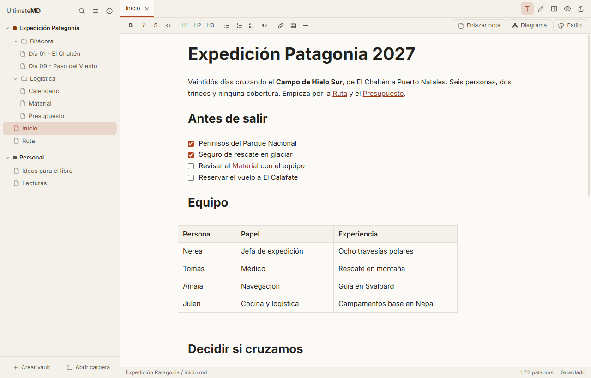
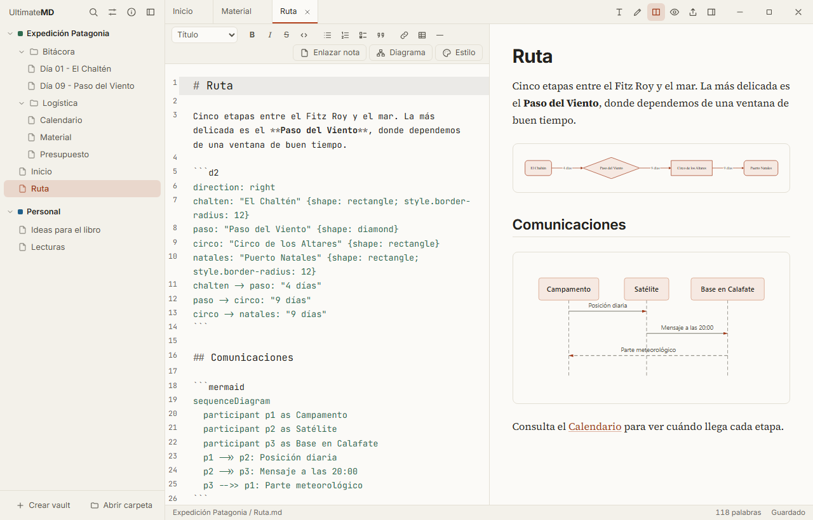
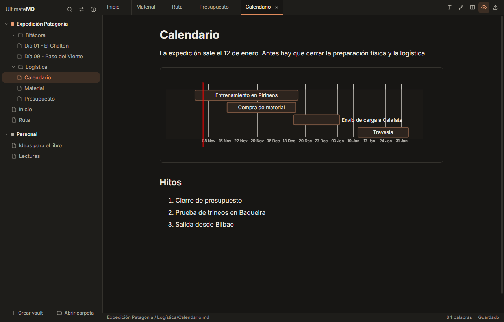
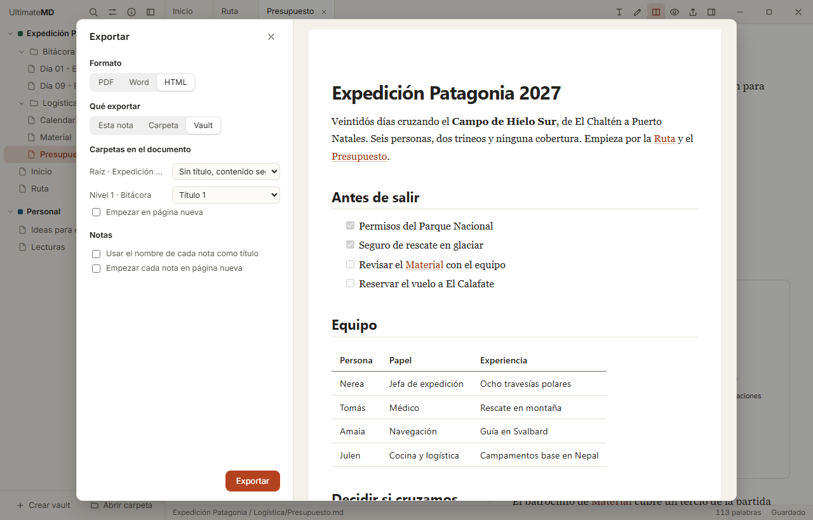
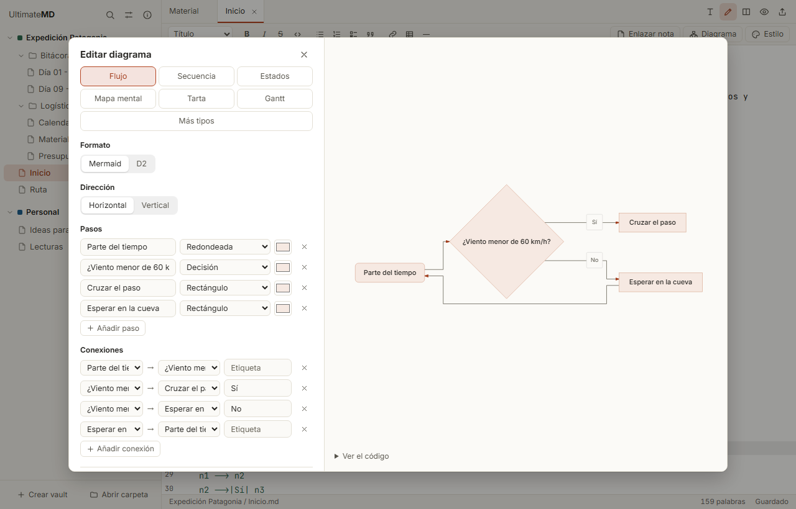
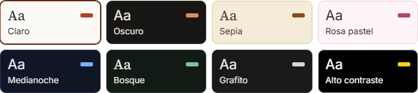
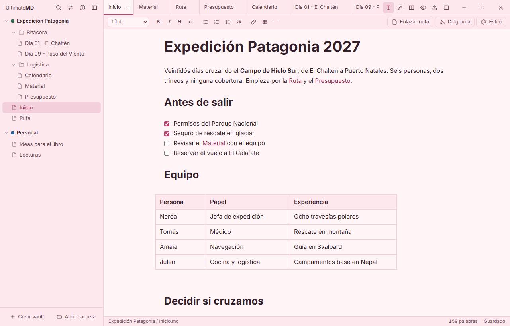
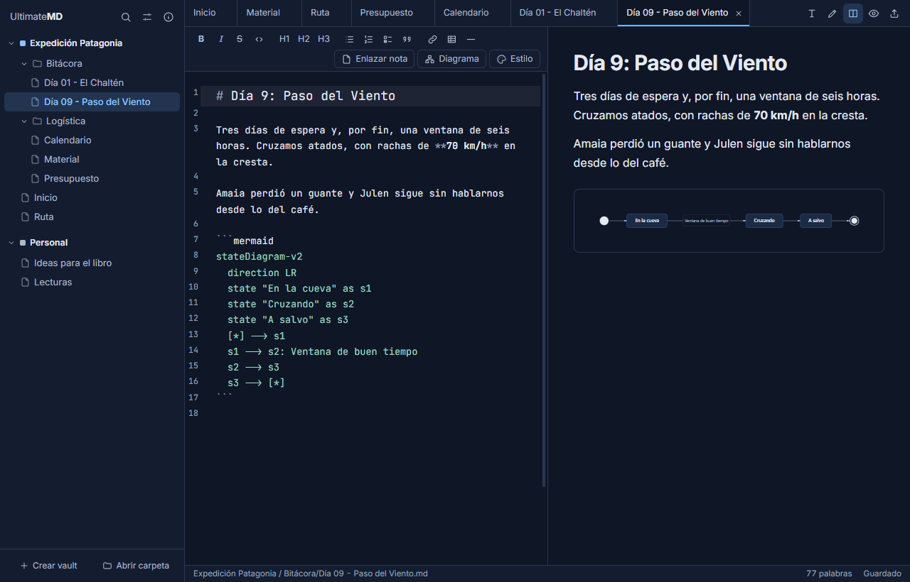
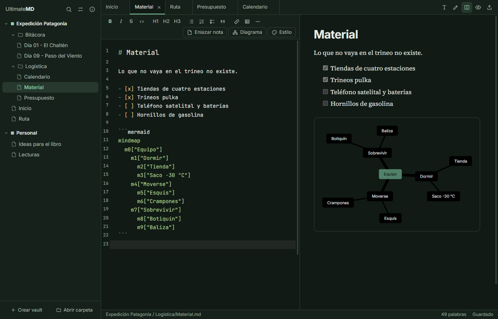
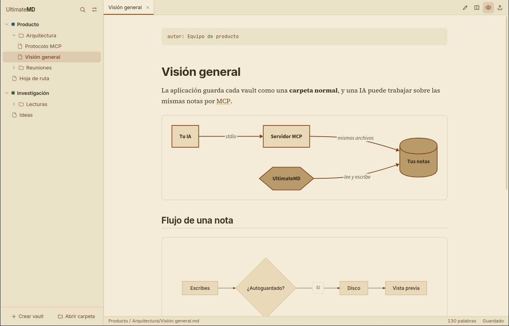

Tus notas en Markdown, convertidas en documentos de verdad.
Un editor libre para Windows, macOS y Linux. Escribe con formato, dibuja diagramas sin saber código, exporta a PDF y Word con tus plantillas y conecta tu IA por MCP. Todo sobre archivos normales.

Escribe como en un procesador de textos
El modo visual muestra el formato mientras escribes, y la barra te da títulos, listas, tablas y enlaces sin saber Markdown. Por debajo, tu archivo sigue siendo Markdown normal.
- Tablas de verdad, que se editan celda a celda.
- Pega desde webs, Word o Google Docs y se convierte en Markdown; las imágenes pegadas se guardan en el vault.
- Callouts, plantillas de nota y enlaces a un título concreto.
- Enlaza notas escribiendo
[[, con sugerencias, y ábrelas con un clic. - Si lo prefieres, edita el Markdown con vista dividida.

Una carpeta es un vault
Tus notas son archivos .md en carpetas normales, sin base de datos ni formato propio. Puedes abrir un vault de Obsidian tal cual, sincronizarlo como quieras y seguir usándolo con cualquier otro programa.
- Varios vaults abiertos a la vez, con pestañas de cualquiera de ellos.
- Búsqueda global sin distinguir acentos, que abre la nota en la línea encontrada, y selector rápido.
- Renombra o mueve notas sin romper enlaces: se actualizan solos. Los rotos se reúnen en una lista para corregirlos.
- Lee un vault o una carpeta de arriba abajo, como un solo documento, con un índice al lado.
- Alias y notas incrustadas de Obsidian, y, si el vault está en Git, qué cambió y commit sin salir de la app.
- Abre también archivos
.mdsueltos, sin vault.

Documentos que parecen documentos
Exporta una nota, una carpeta o el vault completo. El PDF se compone con un motor tipográfico real, sobre fondo blanco, con portada, índice y páginas numeradas.
- Word con tus plantillas: se conservan portada, cabeceras, fuentes, estilos e índice.
- Carpetas a tu medida: cada nivel puede ser un título, un estilo de la plantilla o desaparecer.
- En tres pasos, con vista previa página a página y una revisión que avisa de imágenes que faltan, enlaces rotos, diagramas con error y títulos que saltan niveles.
- PDF/A para archivar, con autor y título en las propiedades.
- Enlaces que funcionan: en Word y PDF, un enlace a otra nota del documento salta a ella y muestra su título.
- Sitio web: una página por nota, con menú, lista para GitHub Pages.

Diagramas sin escribir código
Crea flujos, secuencias, estados, mapas mentales, tartas y Gantt con un formulario, viendo el resultado al momento. Para todo lo demás hay plantillas editables de Mermaid y D2.
- A tu estilo: elige tema, colores o aspecto de boceto para un diagrama, una nota o todo el vault.
- Sin conexión: se dibujan en tu equipo, y se exportan a SVG y PNG. Las conexiones pueden animarse.
- Errores claros: si uno falla, te dice en qué línea y por qué.
- También a mano: escribe un bloque
mermaidod2si lo prefieres.

Tu IA trabaja sobre tus notas
UltimateMD incluye un servidor MCP. Claude, Cursor y otros clientes pueden buscar, leer y escribir en tus vaults, aunque la app esté cerrada. Si está abierta, ves los cambios al momento.
claude mcp add --scope user ultimatemd -- "/ruta/a/ultimatemd-mcp"La app te da este comando con la ruta correcta, en Ajustes.
Cada vault puede llevar una guía de estilo para los diagramas, como un CLAUDE.md: la IA la lee antes de dibujar, en Mermaid, en D2 o como imagen, y así todos se parecen.
Desactivado
La IA ni siquiera ve que el vault existe.
Lectura
Listar, leer y buscar. Es el nivel por defecto.
Lectura y escritura
También crear y modificar. Borrar siempre va a la papelera.
Ocho temas, y los tuyos
Cada tema cubre la interfaz, el editor, la vista previa y los diagramas. Además, cada vault puede tener temas propios, y una nota puede elegir el suyo. La app está en castellano, euskera e inglés.





Descargar
Libre y gratuito, con licencia MIT. Tus notas no salen de tu equipo.
Los instaladores aún no están firmados, así que Windows y macOS mostrarán un aviso la primera vez. Las instrucciones están en el README.